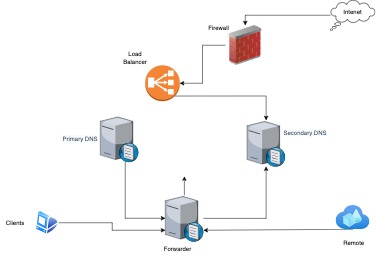

Project Overview
Designed and implemented a global DNS infrastructure for Central Bank of Afghanistan, serving 3,500 employees across 32 offices worldwide. The solution addressed critical performance and security requirements for their financial trading platforms where millisecond latency improvements translate to significant competitive advantage.
The architecture was built to withstand 99.999% availability requirements, with DNSSEC validation, DNS-over-HTTPS for remote workers, and intelligent traffic management using DNS policies. The implementation reduced DNS resolution times by 72% while eliminating cache poisoning vulnerabilities.
Architecture Design
The solution employed a multi-layered DNS architecture with clear separation between authoritative and recursive resolvers. Global anycast was implemented for critical DNS services, with regional secondaries providing low-latency responses.
DNS Infrastructure Architecture
Figure 1: Three-tier DNS architecture with clear separation of concerns and global distribution
Key Features
DNSSEC Implementation
Full DNSSEC signing for all zones with automated key rotation and monitoring. Implemented with RFC 5011 key rollover procedures for zero-downtime maintenance.
Performance Optimization
Response Rate Limiting (RRL) to mitigate DDoS attacks combined with aggressive negative caching to reduce upstream queries by 68%.
GeoDNS Routing
Geographic traffic management with EDNS Client Subnet support, reducing latency for trading applications by directing users to nearest endpoints.
Threat Protection
Integrated with enterprise threat intelligence feeds to block resolution of known malicious domains at the DNS layer.
High Availability
Anycast implementation with BGP failover providing 99.999% uptime across all global locations with sub-second failover.
Advanced Analytics
Full query logging with Splunk integration for traffic analysis, capacity planning, and security forensics.
Technical Implementation
The solution was implemented using Windows Server 2022 DNS role with custom PowerShell DSC configurations for consistent deployment across all nodes. Below are key configuration examples:
Invoke-DnsServerZoneSign -ZoneName "contoso.com" \
-KeySigningKey "KSK-2023" -ZoneSigningKey "ZSK-2023" \
-DigestType SHA384 -DSRecordGenerationAlgorithm SHA384 \
-RolloverPeriod 90 -DnsSecValidation Yes
# DNS Policy for geographic traffic management
Add-DnsServerQueryResolutionPolicy -Name "GeoEUPolicy" \
-Action ALLOW -ClientSubnet "eq,EU-Subnets" \
-ZoneScope "EU-Scope,1" -Fqdn "*.contoso.com" \
-ProcessingOrder 1 -PassThru
# Response Rate Limiting to mitigate DDoS
Set-DnsServerResponseRateLimiting -Enable $true \
-ErrorsPerSec 5 -ResponsesPerSec 50 \
-WindowInSec 5 -LeakRate 5
Project Results
The new DNS infrastructure delivered measurable improvements across all key performance and security metrics:
The implementation was completed 2 weeks ahead of schedule and became the new standard for DNS architecture within the organization. Comprehensive documentation and training ensured smooth handover to the operations team.